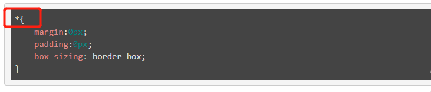

margin-top:上外边距: margin-bottom:下外边距 margin-left:左外边距 margin-right:右外边距
margin:value - 将上下左右都设置成value值 margin:value1 value2 value3 value4; - 4个值分别是上右下左 margin:value1 value2; - 第一个值表示上下，第二个值表示左右 margin:value1 value2 value3; -第一个值表示上，第二个值表示左右，第三个值表示下
padding属性可以控制元素的内边距，简单的说就是控制容器与内部元素之间的距离，与margin一样，padding也有对应的四个属性分别表示上下左右
padding-top:上内边距 padding-bottom:下内边距 padding-left:左内边距 padding-right:右内边距
/* 设置一像素，红色，实现边框 */ border:1px solid red;
可以转换成完整的写法: /* 边框宽度 */ border-width:1px; /* 边框样式 */ border-style:solid; /* 边框颜色 */ border-color:red;
元素的实际宽度 = border-left + border-right + width + padding-left + padding-right;
元素的实际高度 = border-top + border-bottom + height + padding-top + padding-bottom;
在实际开发中，为了方便计算，我们希望设置的width的值就是原生的实际宽度，不再希望考虑padding和border的加减运算，我们可以通过box-sizing属性实现这个功能
通过设置box-sizing: border-box; 元素的实际宽度就是width设置的宽度，而padding和border的值是显示在width值内部的。
在实际开发中，将元素设置box-sizing: border-box;确实会给开发带来便利，所以我们可以在元素初始化的时候，将box-sizing: border-box;赋值给所有元素 块元素：可以设置宽高，可以设置所有外边距，独立成行。h、div、ul、li、p、form;
行内块元素（内联块元素）：可以设置宽高，可以设置外边距，不独立成行。img、input;
行内元素（内联元素）：不可以设置宽高，不可以设置上下外边距，不独立成行。a、span;